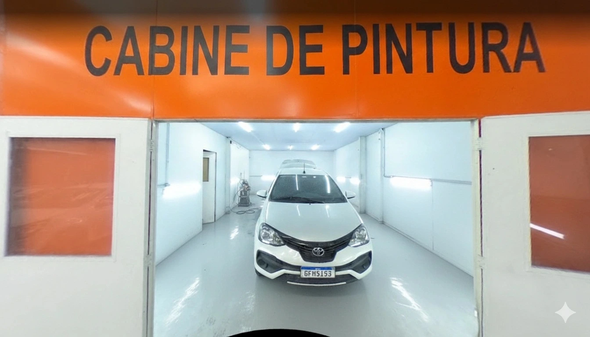
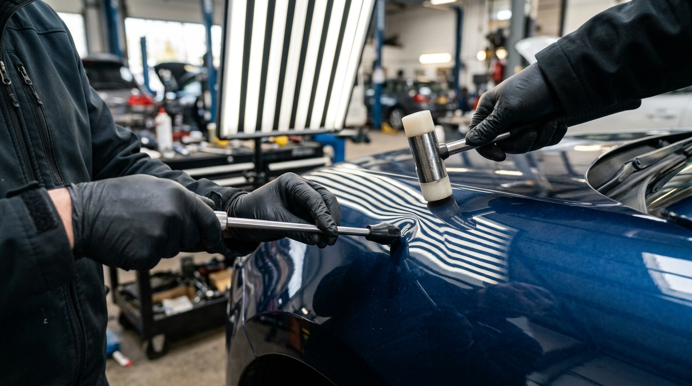
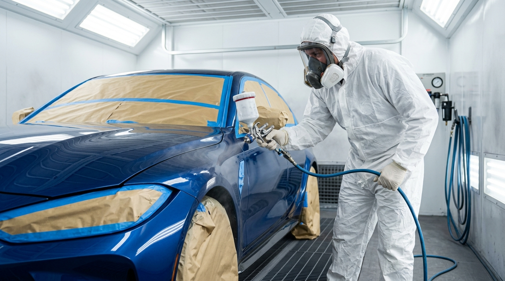
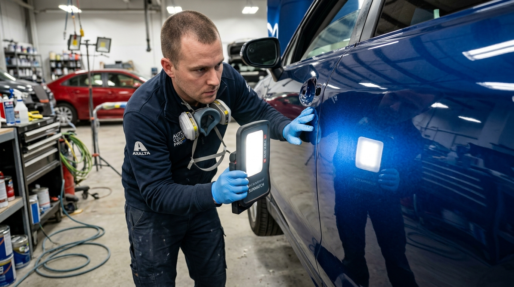

Funilaria e Pintura em Osasco FG Car Oficina Especializada
Recupere o seu veículo com padrão original de fábrica. Pintura em estufa climatizada,
colorimetria computadorizada e martelinho de ouro com agilidade para você não ficar a pé.
Orçamento rápido e sem burocracia na Av. Visconde de Nova Granada.
🛡️Garantia por escrito de tonalidade e alinhamento
⏱️Orçamento em minutos via WhatsApp
POR QUE ESCOLHER A FG CAR
Funilaria e Pintura em Osasco com Padrão de Fábrica
A FG Car é uma oficina de funilaria e pintura em Osasco,
no bairro Cipava, com cabine de pintura pressurizada, colorimetria computadorizada e
martelinho de ouro. Atendemos batidas, amassados, ralados e recuperação de para-choques,
com orçamento prévio por fotos no WhatsApp. Endereço: Av. Visconde de Nova Granada,
3121 — Cipava, Osasco/SP — CEP 06075-380.
Procurando funilaria em Osasco com acabamento original de fábrica? A FG Car Oficina Funilaria e Pintura atende motoristas do Cipava, da Bela Vista, da Campesina, da Vila Yara e do Centro, além de Jaguaribe, Km 18, Rochdale e Quitaúna, com acesso direto pela Av. dos Autonomistas e pela Rodovia Castelo Branco. Também recebemos veículos de Carapicuíba, Barueri, Alphaville, Cotia e da zona oeste de São Paulo — as rotas estão detalhadas no bloco como chegar na oficina.
Nossa oficina de pintura em Osasco conta com cabine de pintura pressurizada e climatizada, livre de poeira e ciscos, com secagem térmica controlada entre 60°C e 65°C. O laboratório de colorimetria digital computadorizada garante a fórmula exata da cor original do seu veículo — seja tinta sólida, metálica, perolizada ou tricapa — com verniz de alto sólidos (HS/UHS) e proteção UV.
Além da pintura automotiva em estufa, executamos funilaria de colisão com gabarito de alinhamento milimétrico de monobloco, repuxo digital com spotter (sem queimar a chapa), martelinho de ouro (PDR) para amassados sem repintura, recuperação de para-choques por solda plástica e polimento técnico com cristalização. Com mais de 15 anos de experiência em Osasco e avaliação 4.9 no Google, oferecemos orçamento transparente e estimativa prévia gratuita pelo WhatsApp — envie as fotos do seu carro e receba a resposta em minutos.
Por FG Car Oficina e Funilaria e Pintura — conteúdo produzido pela equipe técnica da oficina em Osasco.
Atualizado em .
SERVIÇOS DE PRECISÃO
Soluções Completas de Funilaria e Pintura Automotiva em Osasco
Trabalhamos com equipamentos profissionais para devolver o alinhamento, a segurança e o brilho original do seu carro, seja uma pequena batida de garagem ou reparos de grande porte. Cada serviço abaixo é executado na mesma estrutura de funilaria e pintura em Osasco.
Recuperação estrutural de lataria, portas, capôs, para-lamas e painéis com alinhamento milimétrico, preservando os pontos originais de segurança do veículo.
Estrutura Profissional de Funilaria e Pintura em Osasco
Espaço amplo, estufa própria e equipe técnica especializada para cuidar do seu carro com total segurança e garantia de fábrica na Av. Visconde de Nova Granada.
Solda plástica profissional para trincas, quebras e ralados em para-choques dianteiros e traseiros, evitando o gasto desnecessário com a compra de uma peça nova.
Solda plástica e reforço estrutural
Remodelação e pintura localizada
Custo significativamente inferior ao da substituição da peça original
Correção profunda de verniz que elimina riscos superficiais, hologramas, manchas de chuva ácida e devolve o espelhamento profundo e proteção à pintura.
Martelinho de ouro e repintura tradicional resolvem problemas diferentes: a comparação abaixo mostra quando cada técnica é a correta.
O detalhamento está em funilaria tradicional x martelinho de ouro.
Critério
Martelinho de Ouro (PDR)
Repintura Tradicional
Quando é indicado
Amassado com tinta e verniz íntegros, sem vinco cortante
Tinta estourada, vinco cortante, chapa esticada ou ferrugem
Pintura de fábrica
Preservada integralmente
A peça, ou parte dela, recebe nova pintura
Decisão técnica
Acesso à face interna da peça e leitura da profundidade pelo reflexo
Extensão do dano, necessidade de massa, primer e esfumamento
Prazo típico
1 a 2 dias úteis, frequentemente no mesmo dia
3 a 5 dias úteis, contando preparação, primer, tinta, verniz e cura
Custo relativo
Menor, porque não consome tinta e verniz
Maior, pela soma de materiais de pintura e horas de cabine
Efeito na revenda
Mantém a lataria original, o que favorece a avaliação
Bem executada não desvaloriza; mal executada levanta suspeita de colisão
Limite técnico
Não se aplica a peças de dupla face, vincos profundos ou granizo com trincas
Sem limite de extensão e permite substituição da peça
Riscos do serviço
Perfuração ou estiramento da chapa quando a ferramenta é usada de forma inadequada
Diferença de tom quando faltam colorimetria e esfumamento nas bordas
Onde é executado
Box de PDR com alavancas e espelhamento de inspeção
Cabine pressurizada com cura entre 60 °C e 65 °C
CRITÉRIOS TÉCNICOS
Como Escolher a Oficina de Funilaria e Pintura em Osasco
Escolher uma oficina de funilaria e pintura em Osasco se resume a quatro
verificações objetivas: cabine pressurizada, colorimetria com prova de cor, alinhamento de vãos
e garantia por escrito. Nenhuma delas é detalhe estético — todas definem quanto o reparo dura
e quanto o carro vale na revenda. A FG Car fica no Cipava e atende os principais bairros da
cidade, de Campesina a Vila Yara.
A cabine pressurizada mantém pressão positiva e filtragem, o que impede cisco e poeira de cair
sobre a tinta fresca. Sem esse controle, o verniz cura com casca de laranja e a correção exige
lixamento — etapa que só aparece depois do serviço pago. Já a colorimetria com espectrofotômetro
resolve o problema do tom: o verniz das peças vizinhas desbotou com o sol, e a fórmula de
fábrica, aplicada pura, fica visivelmente mais clara.
O alinhamento de vãos é o teste visual mais rápido para detectar serviço malfeito: frestas
irregulares entre porta, capô e para-lama denunciam estrutura fora de medida. A garantia por
escrito fecha a lista, porque obriga a oficina a responder por tonalidade e alinhamento depois
da entrega. Quem cobra muito abaixo do mercado costuma pular uma dessas etapas — geralmente a cabine.
Cabine pressurizada com cura controlada entre 60 °C e 65 °C
Espectrofotômetro com prova de cor em cartela antes da aplicação
Alinhamento de vãos e folgas conferido na inspeção final
Garantia documentada de tonalidade e montagem
Reunimos esses critérios no guia
como escolher uma oficina de funilaria e pintura em Osasco,
com o passo a passo da inspeção. Se você já tem um orçamento em mãos, envie as fotos do dano e
comparamos o escopo com a avaliação técnica de funilaria em Osasco.
TECNOLOGIA DE PONTA EM OSASCO
Cabine de Pintura em Estufa: Acabamento Impecável Livre de Poeira e Ciscos em Osasco
O maior diferencial entre um serviço amador e o acabamento profissional de alto padrão está no controle ambiental da pintura.
Na FG Car, oficina de funilaria e pintura em Osasco, o seu veículo não é pintado em ambiente aberto exposto à poeira da rua, vento ou impurezas. Nós operamos com cabine de pintura estufa totalmente pressurizada e climatizada, oferecendo o mesmo padrão técnico das linhas de montagem das montadoras:

Cabine Climatizada Pressurizada Ativa
🛡️
Zero Ciscos e Livre de Poeira:Filtragem micrométrica com fluxo de ar positivo que elimina ciscos e impurezas, impedindo que partículas caiam sobre a tinta fresca ou sobre o verniz.
🎨
Colorimetria Computadorizada:Ajustamos a fórmula original do veículo levando em consideração o desgaste natural da peça vizinha. Sem manchas, sem emendas visíveis e sem diferença de tom.
🔥
Secagem Térmica Homogênea:A cura forçada por temperatura controlada garante máxima dureza do verniz, brilho espelhado duradouro e resistência contra raios solares e lavagens.
Guia de Fotos para Receber o Orçamento de Funilaria pelo WhatsApp
Cinco fotos tiradas com o celular na horizontal, de dia e com o carro parado. Com esse conjunto, a equipe técnica da FG Car
estima prazo, custo e informa se o dano tem chance de ser resolvido com martelinho de ouro.
1
Foto 3/4 Ampla
Fique a 3 ou 4 metros do carro, na diagonal, com o veículo inteiro e a placa no enquadramento. Luz do dia,
celular na horizontal.
Mostra o modelo, a cor e quais peças foram atingidas.
2
Foto Frontal do Dano
Aproxime-se a cerca de 50 cm e fotografe o dano de frente, com o celular apoiado ou estabilizado nas duas mãos.
Revela se a tinta quebrou ou se a chapa apenas amassou.
3
Foto Rasante com Reflexo
Agache na altura da peça e fotografe de lado, usando o reflexo do céu ou da rua sobre a pintura.
Mostra a profundidade do amassado e se existe vinco cortante.
4
Foto da Etiqueta de Cor
Fotografe a etiqueta com o código de cor na coluna da porta do motorista, na soleira ou no vão do motor.
Entrega o código exato da montadora, base da colorimetria.
5
Foto de Alinhamento de Vãos
Enquadre as frestas entre portas, capô, porta-malas e faróis, sempre de frente para os vãos.
Indica dano estrutural, que muda prazo e orçamento.
Envie as cinco fotos de uma só vez pelo WhatsApp e receba a estimativa prévia gratuita. É o caminho mais rápido para quem procura funilaria em Osasco sem sair de casa: a resposta traz prazo, faixa de custo e se o dano tem chance de sair com martelinho de ouro. Se preferir, fale antes com a equipe:
Av. Visconde de Nova Granada, 3121 — Cipava, Osasco/SP, de segunda a sexta das 8h às 18h e sábado das 8h às 12h.
Por que Motoristas de Osasco e Região Confiam na FG Car?
Sabemos que o seu carro é uma conquista valiosa e que ficar sem ele atrapalha a sua rotina de trabalho e família.
Por isso, a FG Car Oficina e Funilaria e Pintura investe em infraestrutura de padrão concessionária, localizada estrategicamente no bairro Cipava, em Osasco:
✓
Cabine de Pintura Profissional:Ambiente pressurizado e aquecido que garante secagem perfeita, sem bolhas, sem casca de laranja e sem marcas de poeira.
✓
Colorimetria Computadorizada:Chega de carro com peça pintada parecendo de cor diferente. Identificamos o código exato da montadora e o desgaste natural da peça, com acabamento e transição imperceptíveis a olho nu e prova de cor em cartela antes da aplicação.
✓
Compromisso Rígido com Prazos:Alinhamos o dia exato da entrega e trabalhamos com agilidade para você não ficar a pé por semanas.

Martelinho de Ouro
Desamassamento Artesanal (PDR)
100% de preservação da tinta de fábrica sem repintura

Cabine Estufa PPG
Pintura Pressurizada & Verniz PPG
Secagem térmica uniforme livre de ciscos e pó

Alinhamento Técnico
Recuperação Estrutural de Colisão
Vãos milimétricos e alinhamento original preservado
Atendimento Direto com Especialistas • Orçamento Rápido
Avaliação Técnica Transparente e Sem Burocracia em Osasco
📍 Av. Visconde de Nova Granada, 3121 — Bairro Cipava, Osasco/SP. Envie fotos do veículo no WhatsApp e receba a estimativa técnica em minutos.
Perguntas Frequentes sobre Funilaria e Pintura em Osasco
Respostas diretas e transparentes sobre prazos, custos, métodos de pintura e atendimento.
Quanto custa em média um serviço de funilaria e pintura em Osasco?▼
O valor depende diretamente do nível do dano, da área afetada e se haverá necessidade de recuperação estrutural ou troca de componentes. Pequenos retoques ou desamassamento de para-choque podem começar a partir de valores acessíveis, enquanto pinturas de peças completas variam de acordo com o tipo de tinta (sólida, metálica ou perolizada). Na FG Car, enviando as fotos do dano pelo WhatsApp oficial, fornecemos uma estimativa prévia gratuita em minutos.
Quanto tempo leva para consertar e pintar uma peça do carro?▼
Serviços rápidos de martelinho de ouro ou pequenos retoques são frequentemente concluídos entre 1 e 2 dias úteis. Reparos médios de funilaria e pintura com estufa levam tipicamente de 3 a 5 dias úteis, garantindo o tempo técnico de preparação, primer, pintura e cura do verniz. A FG Car prioriza agilidade para diminuir o tempo em que o cliente fica sem o automóvel.
A peça pintada pode ficar com tom diferente do resto do carro?▼
Pode, se a oficina pintar apenas com o código da tinta. Na FG Car o processo começa pela leitura do código na etiqueta do veículo e pela medição com espectrofotômetro, porque o verniz das peças vizinhas já sofreu desgaste do sol e das lavagens. Antes da aplicação fazemos prova de cor em cartela e, dentro da cabine pressurizada, trabalhamos o esfumamento nas bordas. Em cores perolizadas e tricapa esse cuidado é obrigatório.
Quando é indicado fazer Martelinho de Ouro em vez de Funilaria tradicional?▼
O martelinho de ouro é indicado sempre que o amassado não tiver quebrado, trincado ou arrancado a camada de tinta e verniz do veículo (situações comuns em chuva de granizo, batidas leves de estacionamento e toques de porta). Se a tinta estiver intacta, o martelinho é a melhor opção, pois preserva 100% da originalidade de fábrica com custo e prazo menores. Se houver vinco cortante ou tinta raspada, a funilaria com repintura é necessária.
Onde fica localizada a oficina da FG Car em Osasco e quais regiões atende?▼
A FG Car está localizada na Avenida Visconde de Nova Granada, 3121, no bairro Cipava, em Osasco - SP. Devido à localização de fácil acesso, atendemos motoristas de toda a cidade de Osasco (Cipava, Bela Vista, Campesina, Centro, Vila Yara, Jaguaribe, Km 18, Rochdale e Quitaúna) e cidades vizinhas como Carapicuíba, Barueri, Cotia e zona oeste de São Paulo.
Compensa acionar o seguro ou fazer o conserto no particular?▼
Depende de três fatores: o valor da franquia, o efeito no bônus da apólice e o tempo de vistoria. Quando o orçamento do reparo fica próximo ou abaixo da franquia, o conserto particular costuma ser mais vantajoso, porque não gera registro de sinistro e devolve o carro mais rápido. Em danos grandes, com troca de peças e recuperação estrutural, o acionamento do seguro tende a compensar. A avaliação técnica em Osasco compara os dois cenários com números reais.
O que é a franquia do seguro e quando o serviço particular é mais vantajoso?▼
A franquia é a parte do conserto que o segurado paga em caso de sinistro, calculada geralmente sobre o valor do veículo, e é devida mesmo quando o reparo custa menos do que ela. Por isso, em danos pequenos e médios, como para-choque ralado, amassado de estacionamento e arranhão de coluna, o serviço particular pode custar menos que a franquia, sem registro de sinistro e sem perda de bônus na renovação.
Amassados de estacionamento e batidas de porta saem com martelinho de ouro?▼
Na maioria dos casos, sim, desde que a tinta e o verniz estejam íntegros, sem trincas ou descascados. Batidas de porta e toques de para-choque em estacionamento são o cenário típico do martelinho de ouro, que devolve a forma original da chapa sem repintar a peça e preserva a pintura de fábrica. A confirmação vem da foto rasante enviada no WhatsApp e da inspeção presencial na oficina em Osasco.
VENHA NOS VISITAR
Localização da FG Car em Osasco
Fácil acesso pela Av. Visconde de Nova Granada: a oficina de funilaria em Osasco tem estacionamento no local e atendimento técnico imediato.
Como Chegar na Oficina
Centro / Vila Yara / Bela VistaSiga pela Av. dos Autonomistas no sentido Cipava e entre na Av. Visconde de Nova Granada, 3121.
Rodovia Castelo Branco / RodoanelUse a saída para a Av. dos Autonomistas no sentido Cipava e siga até a Av. Visconde de Nova Granada, 3121.
Carapicuíba / BarueriVenha pela Av. dos Autonomistas no sentido Centro de Osasco e acesse a Av. Visconde de Nova Granada, no Cipava.
📍
Endereço:
Avenida Visconde de Nova Granada, 3121 Bairro Cipava — Osasco / SP — CEP 06075-380